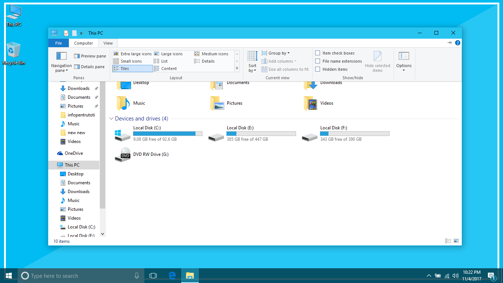
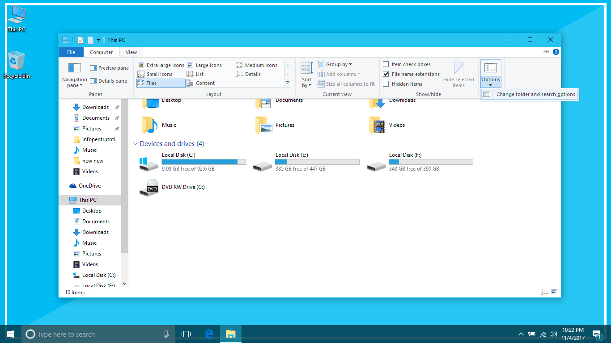
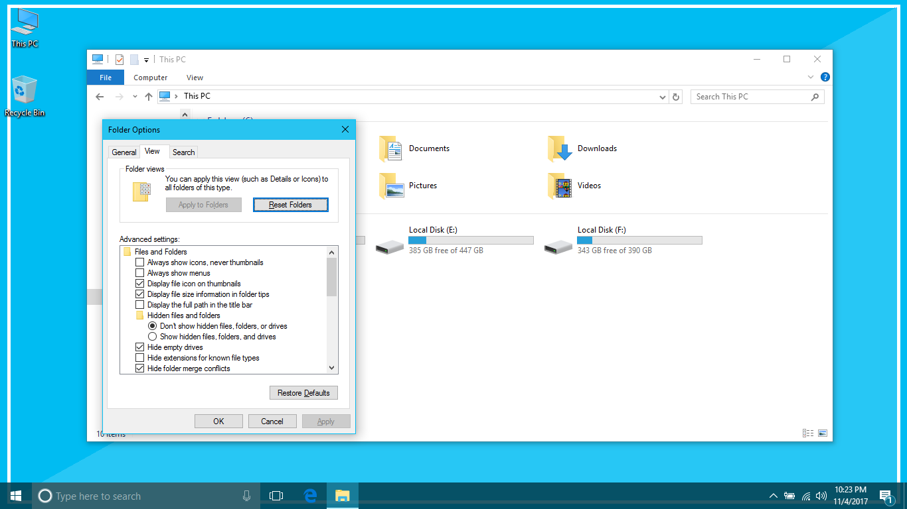

Orice fișier ȋn Windows are un nume și o extensie, extensia este de obicei ascunsă.
De exemplu fișierul este "1.png"
Numele fișierului este "1", iar extensia este ".png"
Pentru a face fișierului cu extensia ".png" să fie unul cu extensia ".jpg", vom proceda astfel:

Deschidem "This PC" sau "File Explorer"
și selectăm opțiunea "View"

Apoi click pe opțiunea "Options" și apoi pe "Change folder and search options"

Ȋn secțiunea "View", debifați "Hide file extensions"
Acum pentru fiecare fișier observăm numele și extensia, redenumim fișierul dorit, schimbȃnd extensia ȋntr-un format compatibil, adică din ".png" ȋn ".jpg" etc.